Decision Tree
Pendahuluan
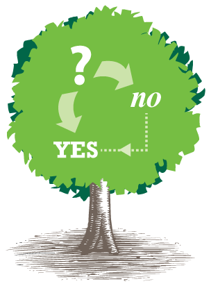
Decision tree atau pohon keputusan adalah alat pendukung keputusan yang menggunakan model keputusan yang berbentuk seperti pohon. Decision tree memetakan berbagai alternatif yang mungkin untuk mengatasi suatu masalah, dan terdapat juga faktor-faktor kemungkinan yang dapat mempengaruhi alternatif tersebut beserta estimasi akhirnya jika memilih alternatif yang ada. Decision tree merupakan salah satu metode yang bisa digunaan untuk menampilkan algoritma dimana hanya berisi pernyataan kontrol bersyarat.
Penggunaan Decision tree ini umunya dalam riset operasi, khususnya dalam analisis keputusan. Tujuan dalam menggunakan Decision tree untuk membantu mengidentifikasi strategi yang paling mungkin untuk mencapai tujuan dan merupakan alat yang populer dalam machine learning.
Decision tree merupakan struktur seperti bagan alur dimana setiap simpul internal mewakili kemungkinan yang ada pada atribut, setiap cabang mewakili hasil dari kemungkinan tersebut, dan setiap simpul daun mewakili label kelas (keputusan diambil setelah menghitung semua atribut). Jalur dari root ke daun mewakili aturan klasifikasi.
Dalam analisis keputusan, decision tree dan diagram yang terkait dengan itu digunakan sebagai alat pendukung keputusan visual dan analitis
Kelebihan dan Kekurangan Decision Tree
Kelebihan Decision Tree
- Mudah dimengerti dan dipahami. Orang-orang bisa memahami model decision tree dengan penjelasan singkat.
- Memiliki nilai walaupun dengan sedikit data yang rumit. Wawasan penting dapat dihasilkan berdasarkan para ahli yang menggambarkan situasi dan preferensi mereka untuk hasil.
- Membantu menentukan nilai terburuk, terbaik, dan nilai yang diharapkan untuk berbagai skenario.
- Menggunakan model kotak putih jika hasil diberikan oleh model.
- Dapat dikombinasikan dengan teknik pengambilan keputusan lainnya.
Kekurangan Decision Tree
- Tidak stabil, yang berarti bahwa perubahan kecil dalam data dapat menyebabkan perubahan besar dalam struktur decision tree optimal.
- Relatif tidak akurat. Banyak prediktor lain memiliki kinerja yang lebih baik dengan data serupa. Hal ini dapat diatasi dengan mengganti decision tree tunggal dengan forest of decision tree acak. Namun hutan yang acak tidak semudah memahami decision tree tunggal.
- Untuk data yang termasuk variabel kategorikal dengan jumlah level yang berbeda, perolehan informasi dalam decision tree cenderung mendukung atribut dengan level yang lebih banyak.
- Perhitungan bisa menjadi sangat kompleks, terutama jika banyak nilai tidak pasti dan / atau jika banyak hasil dikaitkan.
Algoritma Decision Tree
Langkah-langkah algortimaDecision Tree :
- Menghitung Entropy total Dataset
- Menghitung Entropy dan Gain tiap atribut
- Membuat table perhitungan Node
- Membuat Node dengan hasil Gain tertinggi dari table
- Mengulangi langkah 2 - 5 hingga tidak ada node lagi
Contoh Perhitungan K-Means
Diketahui dataset adalah sebagai berikut :
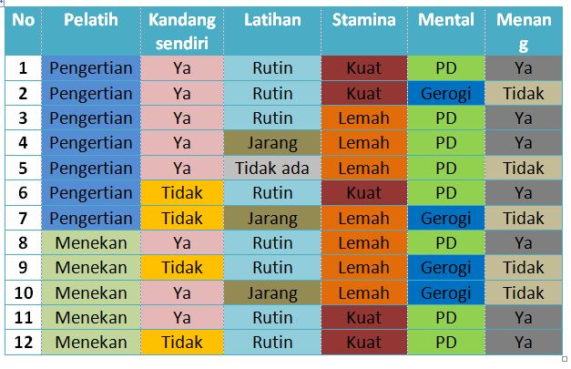
Atribut : Pelatih, kandang sendiri, latihan, stamina, mental Kelas : Menang = ya atau tidak Jumlah data ada 12, terdiri dari : Ya = 7 Tidak = 5
1.Menghitung Entropy Total Dataset
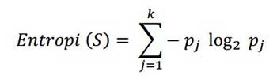
Entrophy [Total]
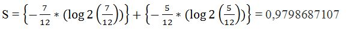
2. Menghitung Entropy dan Gain Tiap Atribut
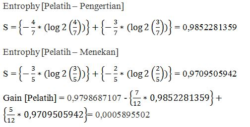
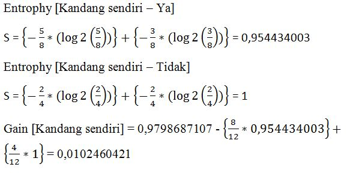
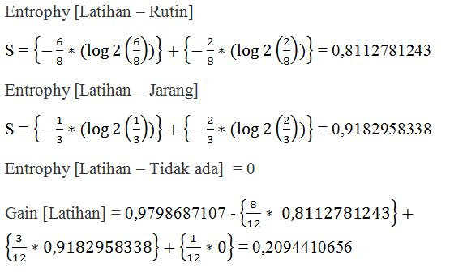
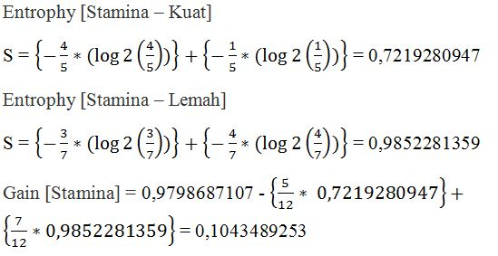
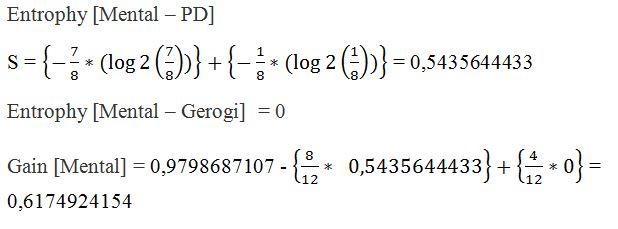
Tabel Perhitungan Node 1
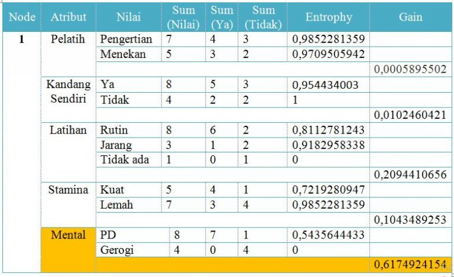
Setelah melakukan perhitungan tersebut, maka dapat dilihat bahwa nilai gain terbesar adalah Gain pada atribut Mental, maka Mental yang akan menjadi node akar (root node).
Ada dua nilai dari atribut Mental yaitu PD dan Gerogi. Nilai atribut Gerogi sudah mengklasifikasikan kasus menjadi satu yaitu keputusannya “Tidak”, sehingga tidak perlu dilakukan perhitungan lebih lanjut. Tetapi untuk nilai atribut PD masih perlu dilakukan perhitungan lagi , karena masih terdapat “Ya” dan “Tidak”.
Gambar decision tree sementara :
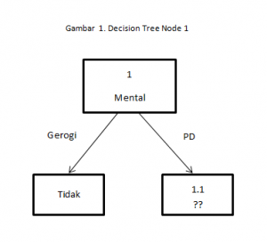
Berdasarkan pembentukan decision tree diatas, Node 1.1 akan dianalisis lebih lanjut. Berikut tabel data yang memiliki atribut Mental = PD.
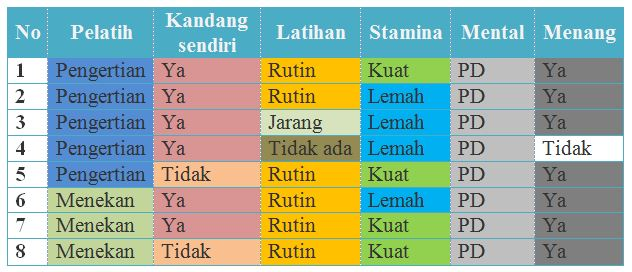
Menghitung Entropi Total dari Dataset Node 1.1 :
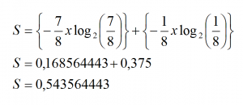
Menghitung Entropi dan Gain dari Keseluruhan Atribut Node 1.1 :
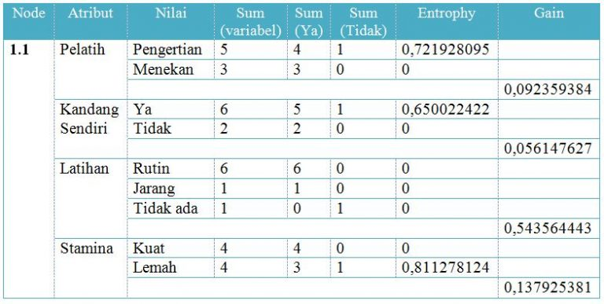
Selanjutnya menentukan atribut yang memiliki gain tertinggi untuk dibuatkan node berikutnya. Gain tertinggi adalah Latihan, sebesar 0.5435644433. Ada tiga nilai dari atribut Latihan yaitu Rutin, Jarang, dan Tidak ada. Nilai atribut Rutin sudah mengklasifikasikan kasus menjadi satu yaitu keputusannya “Ya” , nilai atribut Jarang juga sudah mengklasifikasikan kasus menjadi satu yaitu keputusannya “Ya”, sedangkan nilai atribut Tidak ada mengklasifikasi kasus menjadi satu, yaitu keputusannya “Tidak”, sehingga tidak perlu melakukan perhitungan lebih lanjut.
Dengan demikian decision tree akan tampak seperti berikut :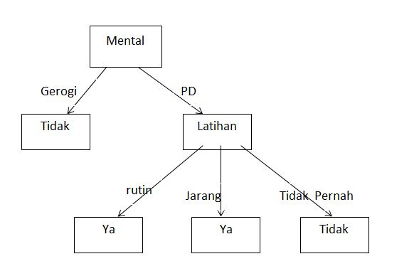
Implementasi
hal yang diperlukan dalam pengimplementasian
- python 3.6
- Jupyter Notebook
library yang harus di install
- numpy library
pip install numpy
- Pandas library
pip install pandas
- matplotlib library
pip install matplotlib
- sklearn library
pip install sklearn
- seaborn library
pip install seaborn
- graphviz library
pip install graphviz
- ipython library
pip install ipython
Step 1,import Library
setelah menginstall library yang diperlukan kita dapat mengimport library kedalam koding
import pandas as pd
import numpy as np
%matplotlib inline
from matplotlib import pyplot as plt
plt.style.use('ggplot')
from sklearn import tree
import sklearn.metrics as metrics
from sklearn import model_selection
from sklearn import tree
from IPython.display import Image
import pydotplus
Step 2,import Data
df = pd.read_csv('./mushrooms.csv')
df.head()
| class | cap-shape | cap-surface | cap-color | bruises | odor | gill-attachment | gill-spacing | gill-size | gill-color | ... | stalk-surface-below-ring | stalk-color-above-ring | stalk-color-below-ring | veil-type | veil-color | ring-number | ring-type | spore-print-color | |
|---|---|---|---|---|---|---|---|---|---|---|---|---|---|---|---|---|---|---|---|
| 0 | p | x | s | n | t | p | f | c | n | k | ... | s | w | w | p | w | o | p | k |
| 1 | e | x | s | y | t | a | f | c | b | k | ... | s | w | w | p | w | o | p | n |
| 2 | e | b | s | w | t | l | f | c | b | n | ... | s | w | w | p | w | o | p | n |
| 3 | p | x | y | w | t | p | f | c | n | n | ... | s | w | w | p | w | o | p | k |
| 4 | e | x | s | g | f | n | f | w | b | k | ... | s | w | w | p | w | o | e | n |
Dari hasil semua fitur bernilai kategorikal
Step 3,Data
Kita akan menampilkan jenis dan jumlah data dari mushroom
df['class'].value_counts()
e 4208 p 3916 Name: class, dtype: int64
dari outpu diatas dapat disimpulkan data memiliki 2 kelas yaitu :'e' dan 'p'
Step 4,Pembagian Data
untuk kemudahahan memproses data kita perlu membagi data target dan atribut yang disimbolkan dengan X dan Y
Y = df['class']
X = df[df.columns[1:]]
lalu memasukkan dalam fungsi berikut
def naive_split(X, Y, n):
# Take first n lines of X and Y for training and the rest for testing
X_train = X[:n]
X_test = X[n:]
Y_train = Y[:n]
Y_test = Y[n:]
return (X_train, X_test, Y_train, Y_test)
def train_model(n=7000):
# Given X_dummy and Y_dummy, split naively into training and testing sets
X_train, X_test, Y_train, Y_test = naive_split(X_dummy, Y_dummy, n)
# Instantiate a default decision tree with fixed random state
# NOTE: In real life you'd probably want to remove the fixed seed.
clf = tree.DecisionTreeClassifier(random_state=42)
# Next, train a default decision tree using the training sets
clf = clf.fit(X_train, Y_train)
# Lastly, return the test sets and the trained model
return (X_test, Y_test, clf)
Step 5,Menghitung Entropy
score = []
precision = []
recall = []
index = np.arange(1,X_dummy.shape[1]+1)
for i in index:
clf = tree.DecisionTreeClassifier(
criterion='entropy',
splitter='best',
max_depth=None,
min_samples_split=2,
min_samples_leaf=1,
min_weight_fraction_leaf=0.0,
max_features=i,
random_state=42, # we override the default here for the sake of reproducibility
max_leaf_nodes=None,
min_impurity_split=1e-07,
class_weight=None,
presort=False)
tmp = test_tree(clf, X_train, X_test, Y_train, Y_test, print_res=False)
score.append(tmp[0])
precision.append(tmp[1])
recall.append(tmp[2])
pd.DataFrame({'Accuracy': score, 'Precision': precision, 'Recall': recall}, index=index).plot(figsize=(20,8), marker='*')
plt.xticks(index, rotation=90)
plt.xlabel('Number of features')
plt.ylabel('Score');
Step 6,Visualisasi Data Menjadi Decision Tree
setelah mendapatkan data training sebanyak 75% dari data kesuluruhan,langkah selanjutnya adalah menguji cobanya pada 25% data testing
X_train, X_test, Y_train, Y_test = model_selection.train_test_split(X_dummy, Y_dummy, test_size=0.75,random_state=42)
clf =tree.DecisionTreeClassifier(random_state=42) clf = clf.fit(X_train, Y_train)
dot_data = tree.export_graphviz(clf, out_file=None,
class_names=['p','e'],
filled=True, rounded=True)
graph = pydotplus.graph_from_dot_data(dot_data)
Image(graph.create_png())
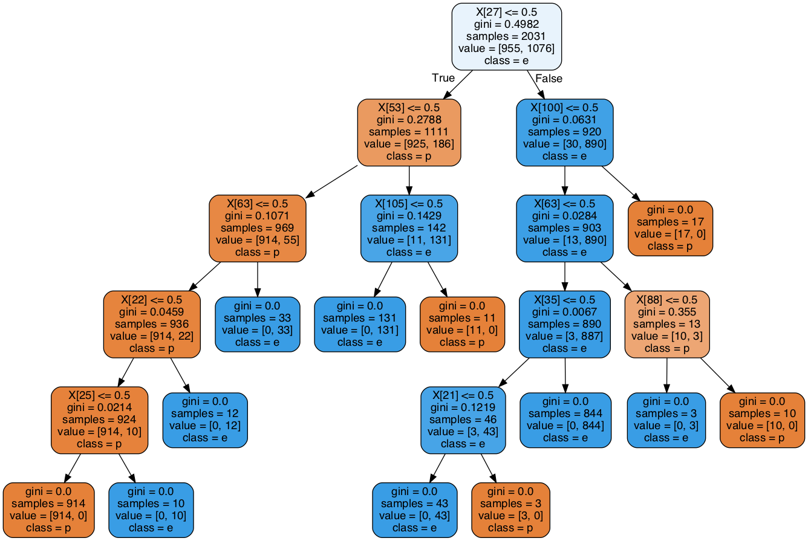
Note : Dataset dan Program bisa didownload dan dilihat dalam DISINI
Referensi
- https://www.kaggle.com/jnduli/decision-tree-classifier-for-mushroom-dataset
- http://drorata.github.io/posts/2017/Mar/31/mushrooms-and-decision-trees/index.html
- http://student.blog.dinus.ac.id/devina09/2017/04/18/perhitungan-decision-tree-dengan-algoritma-c45/
- https://informatikalogi.com/algoritma-id3/